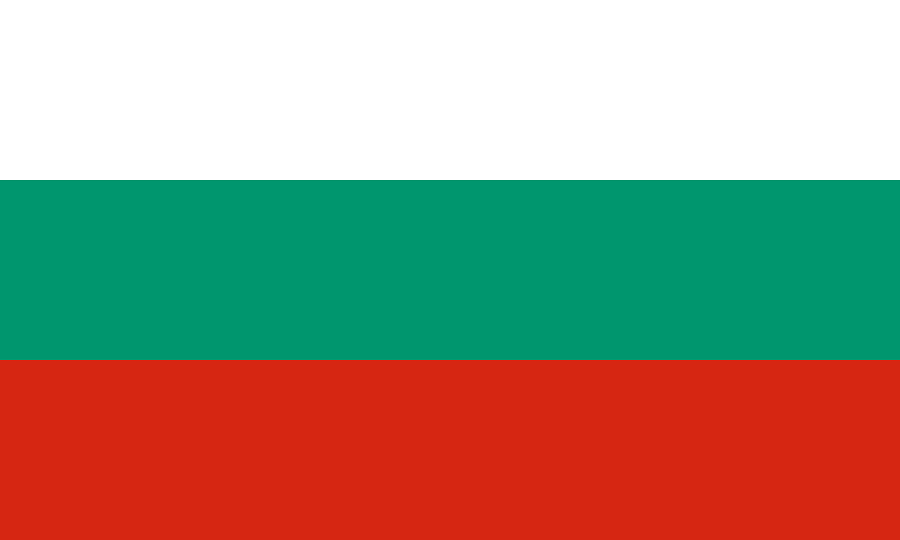

Peak rating: 2785
Months at No. 1: 54
Age at first time No. 1: 28 years, 114 days
Rating at first time No. 1: 2785
Peak rating: 2780
Months at No. 1: 102
Age at first time No. 1: 24 years, 223 days
Rating at first time No. 1: 2780
Peak rating: 2851
Months at No. 1: 255
Age at first time No. 1: 20 years, 263 days
Rating at first time No. 1: 2775
Peak rating: 2817
Months at No. 1: 9
Age at first time No. 1: 20 years, 190 days
Rating at first time No. 1: 2710

Peak rating: 2816
Months at No. 1: 27
Age at first time No. 1: 31 years, 17 days
Rating at first time No. 1: 2804
Peak rating: 2817
Months at No. 1: 21
Age at first time No. 1: 37 years, 111 days
Rating at first time No. 1: 2804
Peak rating: 2882
Months at No. 1: 135
Age at first time No. 1: 19 years, 32 days
Rating at first time No. 1: 2810
Magnus has just turned 31 this year!
Although many
speculate
that
young
prodigies like Firouzja will contest his title, it is unlikely that he will be defeated in
the
near
future. Magnus has been compared to Kasparov, who held the title for 37 years and remained a
dominant figure in the game even after his retirement.